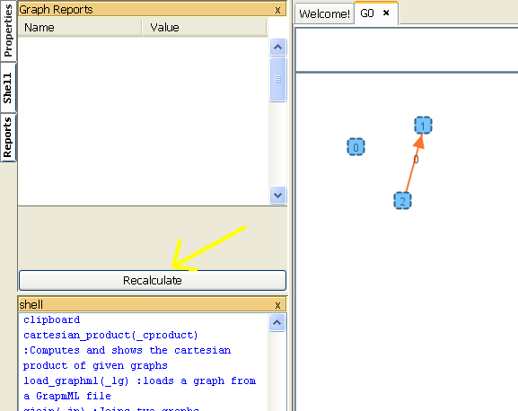
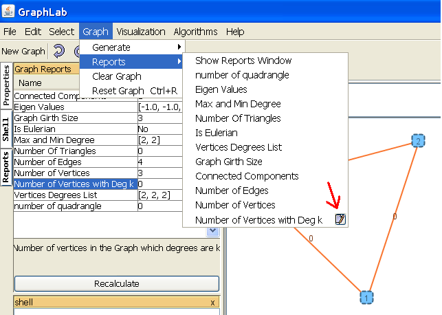

Reports Sidebar
The Reports Sidebar will help you to get some information about your graphs. This information mainly are mathematical parameters of graphs. For example number of connected components,
degree list and ...
The sidebar is empty when the program is started. you should press the Recalculate button, so that GraphTea computes the reports and show the result on a table.

Recalculate Button

Calculated reports
The reports also has a menu located on Graph > Reports,
using this menus you can directly compute a single report, without wasting your time to compute another reports which you don't need them.
Some reports may have some parameters. For example the "Number of Vertices With Degree K" report has a
K parameter which the report result
is based on. A button appears beside their menu which enables you to modify this parameters. Also by double clicking the report name in the report side bar the same dialog
to modify the parameters will be opened.

The
Reports menu and the Parameter Editor
button

The
Parameter Editor Dialog
This button will do the similar job when appears in front of any menu of GraphTea.
All reports in GraphTea have a corresponding command in
shell. This commands return the value of report. for example:
print(NumOfVerticesWithDegK(2));